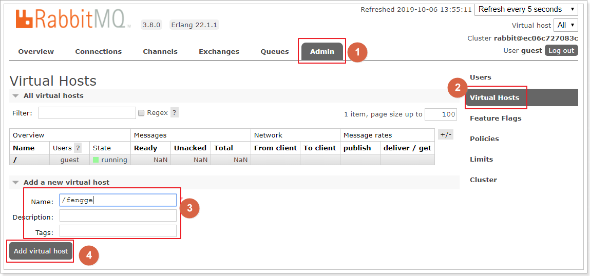
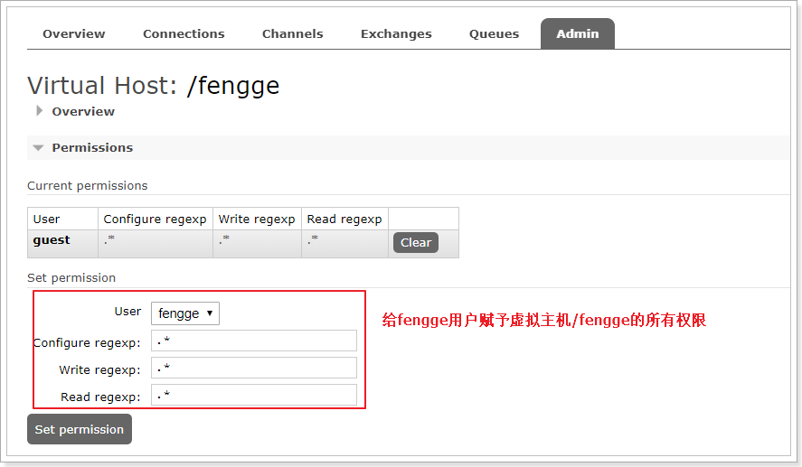
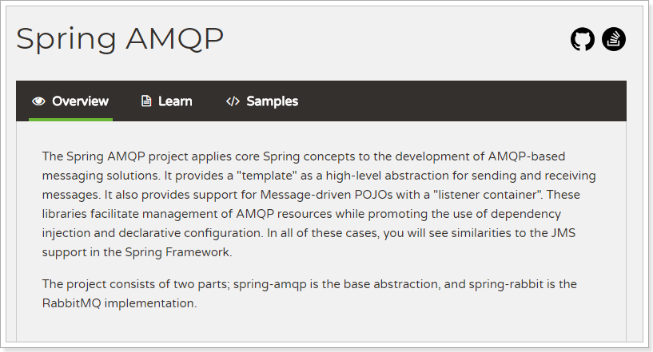

RabbitMQ¶
1. RabbitMQ回顾¶
1.1. 概念回顾¶
MOM：Message-oriented middleware，面向消息中间件
MQ：Message Queue，消息队列。应用程序之间的通信方法
两种主流实现：
- JMS：Java MessageService，是一种java接口规范。必须java实现，只有两种消息模型
- AMQP：Advanced Message Queuing Protocol，高级消息队列协议。任何语言都可实现，可以有多种消息模型
主要作用：
- 异步
- 解耦
- 削峰
主流MQ产品：
- ActiveMQ：基于JMS
- RabbitMQ：基于AMQP协议，erlang语言开发，稳定性好，功能强大，支持多种语言的客户端
- RocketMQ：基于JMS，阿里巴巴产品，目前交由Apache基金会
- Kafka：分布式消息系统，高吞吐量
1.2. 下载和安装¶
官网下载地址：http://www.rabbitmq.com/download.html
可以下载安装包，原生安装（比较麻烦，需要erlang语言环境）。这里使用docker安装
下载镜像：docker pull rabbitmq:management
创建实例并启动：
docker run -d -p 5672:5672 -p 15672:15672 -p 25672:25672 --name rabbitmq rabbitmq:management
注： 5672 -- client端通信口 15672 -- 管理界面ui端口 25672 -- server间内部通信口
1.3. 管理界面¶
在web浏览器中输入地址：http://虚拟机ip:15672/
输入默认账号: guest : guest
overview：概览
connections：无论生产者还是消费者，都需要与RabbitMQ建立连接后才可以完成消息的生产和消费，在这里可以查看连接情况
channels：通道，建立连接后，会形成通道，消息的投递获取依赖通道。
Exchanges：交换机，用来实现消息的路由
Queues：队列，即消息队列，消息存放在队列中，等待消费，消费后被移除队列。
1.3.1. 添加用户¶
如果不使用guest，我们也可以自己创建一个用户：
1、 超级管理员(administrator)
可登陆管理控制台，可查看所有的信息，并且可以对用户，策略(policy)进行操作。
2、 监控者(monitoring)
可登陆管理控制台，同时可以查看rabbitmq节点的相关信息(进程数，内存使用情况，磁盘使用情况等)
3、 策略制定者(policymaker)
可登陆管理控制台, 同时可以对policy进行管理。但无法查看节点的相关信息(上图红框标识的部分)。
4、 普通管理者(management)
仅可登陆管理控制台，无法看到节点信息，也无法对策略进行管理。
5、 其他
无法登陆管理控制台，通常就是普通的生产者和消费者。
1.3.2. 创建Virtual Hosts¶
虚拟主机：类似于mysql中的database。他们都是以“/”开头

1.3.3. 设置权限¶

1.4. 五种消息模型¶
RabbitMQ提供了6种消息模型，但是第6种其实是RPC，并不是MQ，因此不予学习。那么也就剩下5种。
但是其实3、4、5这三种都属于订阅模型，只不过进行路由的方式不同。

五种消息模型：
- 简单模型（simple）
- 工作队列（work）
- 发布订阅（Publish/Subscribe）
- 路由模型（Routing，发布订阅之路由）
- 通配模型（Topics，发布订阅之通配符）
相关概念：
- producer：消息生产者，就是投递消息的程序
- consumer：消息消费者，就是接受消息的程序
- Queue：队列，每个消息都会被投入到一个或多个队列，队列可以接收、转发并存储消息
- Exchange：交换机，可以接收消息并转发消息，不能存储消息。交换机类型有3种：
- fanout：广播，所有队列可以获取消息
- direct：路由，定向发送消息到队列
- topic：通配符，支持通配符
- Routing Key：路由键， exchange可以根据路由键定向发送消息
1.5. 常见优化¶
如何避免消息堆积？
- 能者多劳：channel.basicQos(prefetch: 1)
- 多线程并发消费：concurrency。container启动的时候会根据设置的concurrency的值创建n个BlockingQueueConsumer。注意当队列的Exclusive（默认false）为true时，concurrency参数只能是1
如何避免消息丢失？
- 生产者确认机制：确保消息到达MQ
- 消息持久化：确保不会因为MQ服务器宕机导致消息丢失
- 消费者确认机制：确保消息被消费者正确无误的消费
确保以上3点，基本可以做到消息不丢失
2. Spring AMQP¶
Spring AMQP的页面：http://spring.io/projects/spring-amqp

注意这里一段描述：

Spring-amqp是对AMQP协议的抽象实现，而spring-rabbit 是对协议的具体实现，也是目前的唯一实现。底层使用的就是RabbitMQ。
2.1. 搭建demo工程¶
创建两个demo工程：
依赖相同：
2.1.1. 生产者¶
application.yml：
server:
port: 8080
spring:
rabbitmq:
host: 172.16.116.100
port: 5672
virtual-host: /fengge
username: fengge
password: fengge
publisher-confirm-type: simple # SIMPLE-同步确认（阻塞） CORRELATED-异步确认
publisher-returns: true # 确认消息是否到达队列
RabbitConfig配置类：配置发送方确认
@Configuration
@Slf4j
public class RabbitConfig {
@Autowired
private RabbitTemplate rabbitTemplate;
@PostConstruct
public void init(){
// 确认消息是否到达交换机
this.rabbitTemplate.setConfirmCallback((correlationData, ack, cause) -> {
if (!ack){
log.warn("消息没有到达交换机：" + cause);
}
});
// 确认消息是否到达队列，到达队列该方法不执行
this.rabbitTemplate.setReturnCallback((message, replyCode, replyText, exchange, routingKey) -> {
log.warn("消息没有到达队列，来自于交换机：{}，路由键：{}，消息内容：{}", exchange, routingKey, new String(message.getBody()));
});
}
}
ProducerDemoApplicationTests测试用例发送消息
@SpringBootTest
class ProducerDemoApplicationTests {
@Autowired
private RabbitTemplate rabbitTemplate;
@Test
void contextLoads() {
this.rabbitTemplate.convertAndSend("SPRING_RABBIT_EXCHANGE", "a.b", "hello spring rabbit!");
}
}
2.1.2. 消费者¶
application.yml：
server:
port: 8081
spring:
rabbitmq:
host: 172.16.116.100
port: 5672
virtual-host: /fengge
username: fengge
password: fengge
listener:
type: simple # simple-listener容器使用一个额外线程处理消息 direct-listener（监听器）容器直接使用consumer线程
simple:
acknowledge-mode: manual # manual-手动 auto-自动（无异常直接确认，有异常无限重试） none-不重试
prefetch: 1 # 能者多劳
concurrency: 3 # 避免消息堆积，初始化多个消费者线程
ConsumerListener消费者代码：
@Component
public class ConsumerListener {
@RabbitListener(bindings = @QueueBinding(
value = @Queue(value = "SPRING_RABBIT_QUEUE", durable = "true"),
exchange = @Exchange(value = "SPRING_RABBIT_EXCHANGE", ignoreDeclarationExceptions = "true", type = ExchangeTypes.TOPIC),
key = {"a.b"}
))
public void listener(String msg, Channel channel, Message message) throws IOException {
try {
System.out.println(msg);
// 手动确认消息
channel.basicAck(message.getMessageProperties().getDeliveryTag(), false);
} catch (IOException e) {
e.printStackTrace();
// 是否已经重试过
if (message.getMessageProperties().getRedelivered()){
// 已重试过直接拒绝
channel.basicNack(message.getMessageProperties().getDeliveryTag(), false, false);
} else {
// 未重试过，重新入队
channel.basicReject(message.getMessageProperties().getDeliveryTag(), false);
}
}
}
}
注解说明：
@Componet：类上的注解，注册到Spring容器@RabbitListener：方法上的注解，声明这个方法是一个消费者方法，需要指定下面的属性：bindings：指定绑定关系，可以有多个。值是@QueueBinding的数组。@QueueBinding包含下面属性：value：这个消费者关联的队列。值是@Queue，代表一个队列exchange：队列所绑定的交换机，值是@Exchange类型key：队列和交换机绑定的RoutingKey
类似listen这样的方法在一个类中可以写多个，就代表多个消费者。
2.2. 延时队列及死信队列¶
2.2.1. 概念回顾¶
延时队列：
如果队列不设置TTL，表示消息永远不会过期
如果将TTL设置为0，则表示除非此时可以直接投递该消息到消费者，否则该消息将会被丢弃。
如果设置了队列的TTL属性，那么一旦消息过期，就会被队列丢弃
**死信队列：**如果队列里的消息出现以下情况：
- 消息被否定确认，使用
channel.basicNack或channel.basicReject，并且此时requeue属性被设置为false。 - 消息在队列的存活时间超过设置的TTL时间。
- 消息队列的消息数量已经超过最大队列长度。
那么该消息将成为“死信”。
“死信”消息会被RabbitMQ进行特殊处理，如果配置了死信队列信息，那么该消息将会被丢进死信队列中，如果没有配置，则该消息将会被丢弃。
一般死信队列和延时队列一起使用，使用场景：
- 订单在十分钟之内未支付则自动取消。
- 新创建的店铺，如果在十天内都没有上传过商品，则自动发送消息提醒。
- 账单在一周内未支付，则自动结算。
- 用户注册成功后，如果三天内没有登陆则进行短信提醒。
- 用户发起退款，如果三天内没有得到处理则通知相关运营人员。
- 预定会议后，需要在预定的时间点前十分钟通知各个与会人员参加会议。
2.2.2. 结构及步骤¶
使用方式如下：
步骤：
-
声明延时交换机
-
声明延时队列
x-message-ttl：指定TTL时间
x-dead-letter-exchange：死信转发所需的死信交换机（DLX）
x-dead-letter-routing-key：转发死信时的routingKey（DLK）
-
延时队列绑定到延时交换机
-
声明死信交换机（DLX）
-
声明死信队列（DLQ）
-
死信队列绑定到死信交换机，rontingKey要和第2步的DLK一致。
2.2.3. 配置延时及死信队列¶
修改生产者RabbitConfig，添加延时队列 死信队列及他们之间的绑定关系：
@Configuration
@Slf4j
public class RabbitConfig {
@Autowired
private RabbitTemplate rabbitTemplate;
@PostConstruct
public void init(){
// 确认消息是否到达交换机
this.rabbitTemplate.setConfirmCallback((correlationData, ack, cause) -> {
if (!ack){
log.warn("消息没有到达交换机：" + cause);
}
});
// 确认消息是否到达队列，到达队列该方法不执行
this.rabbitTemplate.setReturnCallback((message, replyCode, replyText, exchange, routingKey) -> {
log.warn("消息没有到达队列，来自于交换机：{}，路由键：{}，消息内容：{}", exchange, routingKey, new String(message.getBody()));
});
}
@Bean
public TopicExchange delayExchange(){
return ExchangeBuilder.topicExchange("SPRING_DELAY_EXCHANGE").build();
}
@Bean
public Queue delayQueue(){
return QueueBuilder.durable("SPRING_DELAY_QUEUE")
.withArgument("x-message-ttl", 60000)
.withArgument("x-dead-letter-exchange", "SPRING_DEAD_EXCHANGE")
.withArgument("x-dead-letter-routing-key", "ab.dead")
.build();
}
@Bean
public Binding delayBinding(TopicExchange delayExchange, Queue delayQueue){
return BindingBuilder.bind(delayQueue).to(delayExchange).with("ab.delay");
}
@Bean
public TopicExchange deadExchange(){
return ExchangeBuilder.topicExchange("SPRING_DEAD_EXCHANGE").build();
}
@Bean
public Queue deadQueue(){
return QueueBuilder.durable("SPRING_DEAD_QUEUE").build();
}
@Bean
public Binding deadBinding(TopicExchange deadExchange, Queue deadQueue){
return BindingBuilder.bind(deadQueue).to(deadExchange).with("ab.dead");
}
}
2.2.4. 生产者发送消息给延时队列¶
2.2.5. 消费者通过监听器获取消息¶
修改消费者的ConsumerListener添加listener2方法：
@Component
public class ConsumerListener {
@RabbitListener(bindings = @QueueBinding(
value = @Queue(value = "SPRING_RABBIT_QUEUE", durable = "true"),
exchange = @Exchange(value = "SPRING_RABBIT_EXCHANGE", ignoreDeclarationExceptions = "true", type = ExchangeTypes.TOPIC),
key = {"a.b"}
))
public void listener(String msg, Channel channel, Message message) throws IOException {
try {
System.out.println(msg);
// 手动确认消息
channel.basicAck(message.getMessageProperties().getDeliveryTag(), false);
} catch (IOException e) {
e.printStackTrace();
// 是否已经重试过
if (message.getMessageProperties().getRedelivered()){
// 已重试过直接拒绝
channel.basicNack(message.getMessageProperties().getDeliveryTag(), false, false);
} else {
// 未重试过，重新入队
channel.basicReject(message.getMessageProperties().getDeliveryTag(), false);
}
}
}
@RabbitListener(queues = "SPRING_DEAD_QUEUE")
public void listener2(String msg, Channel channel, Message message) throws IOException {
try {
System.out.println(msg);
channel.basicAck(message.getMessageProperties().getDeliveryTag(), false);
} catch (IOException e) {
e.printStackTrace();
if (message.getMessageProperties().getRedelivered()){
channel.basicNack(message.getMessageProperties().getDeliveryTag(), false, false);
} else {
channel.basicReject(message.getMessageProperties().getDeliveryTag(), false);
}
}
}
}
3. 项目改造¶
接下来，我们就改造项目，实现搜索服务的数据同步。
3.1. 思路分析¶
发送方：商品微服务
- 什么时候发？
当商品服务对商品进行写操作：增、删、改的时候，需要发送一条消息，通知其它服务。
- 发送什么内容？
对商品的增删改时其它服务可能需要新的商品数据，但是如果消息内容中包含全部商品信息，数据量太大，而且并不是每个服务都需要全部的信息。因此我们**只发送商品id**，其它服务可以根据id查询自己需要的信息。
接收方：搜索微服务
接收消息后如何处理？
- 搜索微服务：
- 增/改：添加新的数据到索引库
- 删：删除索引库数据
3.2. 商品服务发送消息¶
我们先在商品微服务gmall-pms中实现发送消息。
3.2.1. 引入依赖¶
<dependency>
<groupId>org.springframework.boot</groupId>
<artifactId>spring-boot-starter-amqp</artifactId>
</dependency>
3.2.2. 配置文件¶
application.yml及RabbitConfig.java参照生产者的配置内容。
这里略。。。。
3.2.3. 改造SpuInfoServiceImpl¶
在SpuInfoServiceImpl中封装一个发送消息到mq的方法：（需要注入rabbitTemplate模板）
@Autowired
private RabbitTemplate rabbitTemplate;
private void sendMessage(Long id, String type){
// 发送消息
try {
this.rabbitTemplate.convertAndSend("item_exchange", "item." + type, id);
} catch (Exception e) {
logger.error("{}商品消息发送异常，商品id：{}", type, id, e);
}
}
注意：这里要把所有异常都try起来，不能让消息的发送影响到正常的业务逻辑
然后在新增的时候调用：
3.3. 搜索服务接收消息¶
搜索服务接收到消息后要做的事情：
- 增：添加新的数据到索引库
- 删：删除索引库数据
- 改：修改索引库数据
3.3.1. 引入依赖¶
<dependency>
<groupId>org.springframework.boot</groupId>
<artifactId>spring-boot-starter-amqp</artifactId>
</dependency>
3.3.2. 添加配置¶
application.yml中配置参照消费者案例的配置
3.3.3. 编写监听器¶
代码：
@Component
public class SpuInfoListener {
@Autowired
private SearchService searchService;
/**
* 处理insert的消息
*
* @param id
* @throws Exception
*/
@RabbitListener(bindings = @QueueBinding(
value = @Queue(value = "item_spu_queue", durable = "true"),
exchange = @Exchange(
value = "item_exchange",
ignoreDeclarationExceptions = "true",
type = ExchangeTypes.TOPIC),
key = {"item.insert"}))
public void listenCreate(Long id) throws Exception {
if (id == null) {
return;
}
// 创建索引
this.searchService.createIndex(id);
}
}
3.3.4. 编写创建索引方法¶
这里因为要创建和删除索引，我们需要在SearchService中拓展创建索引：
@Override
public void createIndex(Long id) {
Resp<List<SkuInfoEntity>> skuInfoResp = this.gmallPmsFeign.querySkuBySpuId(id);
List<SkuInfoEntity> skuInfoEntities = skuInfoResp.getData();
if (!CollectionUtils.isEmpty(skuInfoEntities)) {
skuInfoEntities.forEach(skuInfoEntity -> {
GoodsVO goodsVO = new GoodsVO();
goodsVO.setId(skuInfoEntity.getSkuId());
goodsVO.setName(skuInfoEntity.getSkuName());
goodsVO.setPic(skuInfoEntity.getSkuDefaultImg());
goodsVO.setPrice(skuInfoEntity.getPrice());
goodsVO.setSale(0); // 销量，数据库暂没设计
goodsVO.setSort(0);
// 设置库存
Resp<List<WareSkuEntity>> wareSkuResp = this.gmallWmsFeign.queryWareSkuBySkuId(skuInfoEntity.getSkuId());
List<WareSkuEntity> wareSkuEntities = wareSkuResp.getData();
if (!CollectionUtils.isEmpty(wareSkuEntities)) {
long sum = wareSkuEntities.stream().mapToLong(WareSkuEntity::getSkuId).sum();
goodsVO.setStock(sum);
}
// 设置品牌
goodsVO.setBrandId(skuInfoEntity.getBrandId());
if (skuInfoEntity.getBrandId() != null) {
Resp<BrandEntity> brandEntityResp = this.gmallPmsFeign.info(skuInfoEntity.getBrandId());
if (brandEntityResp.getData() != null) {
goodsVO.setBrandName(brandEntityResp.getData().getName());
}
}
// 设置分类
goodsVO.setProductCategoryId(skuInfoEntity.getCatalogId());
if (skuInfoEntity.getCatalogId() != null) {
Resp<CategoryEntity> categoryEntityResp = this.gmallPmsFeign.catInfo(skuInfoEntity.getCatalogId());
if (categoryEntityResp.getData() != null) {
goodsVO.setProductCategoryName(categoryEntityResp.getData().getName());
}
}
// 设置搜索的规格属性
Resp<List<ProductAttrValueEntity>> listResp = this.gmallPmsFeign.querySearchAttrValue(id);
if (!CollectionUtils.isEmpty(listResp.getData())) {
List<SpuAttributeValueVO> spuAttributeValueVOS = listResp.getData().stream().map(productAttrValueEntity -> {
SpuAttributeValueVO spuAttributeValueVO = new SpuAttributeValueVO();
spuAttributeValueVO.setId(productAttrValueEntity.getId());
spuAttributeValueVO.setName(productAttrValueEntity.getAttrName());
spuAttributeValueVO.setValue(productAttrValueEntity.getAttrValue());
spuAttributeValueVO.setProductAttributeId(productAttrValueEntity.getAttrId());
spuAttributeValueVO.setSpuId(productAttrValueEntity.getSpuId());
return spuAttributeValueVO;
}).collect(Collectors.toList());
goodsVO.setAttrValueList(spuAttributeValueVOS);
}
Index action = new Index.Builder(goodsVO).index("goods").type("info").id(skuInfoEntity.getSkuId().toString()).build();
try {
jestClient.execute(action);
} catch (IOException e) {
e.printStackTrace();
}
});
}
}
创建索引的方法可以从之前导入数据的测试类中拷贝和改造。
3.4. 新增数据试一试¶
在后台新增一条商品，并发送消息，在搜索页查看是否统一。
本文总阅读量次